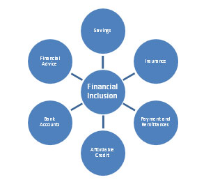
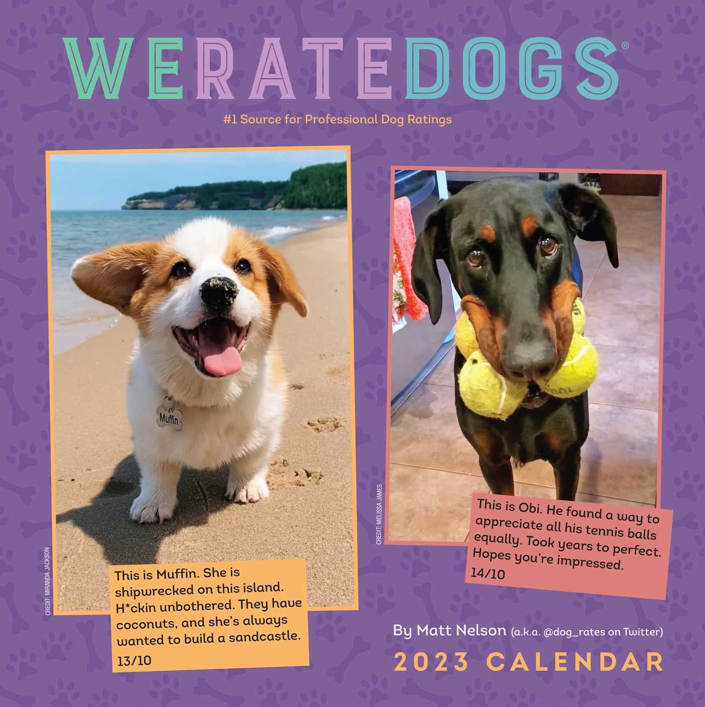
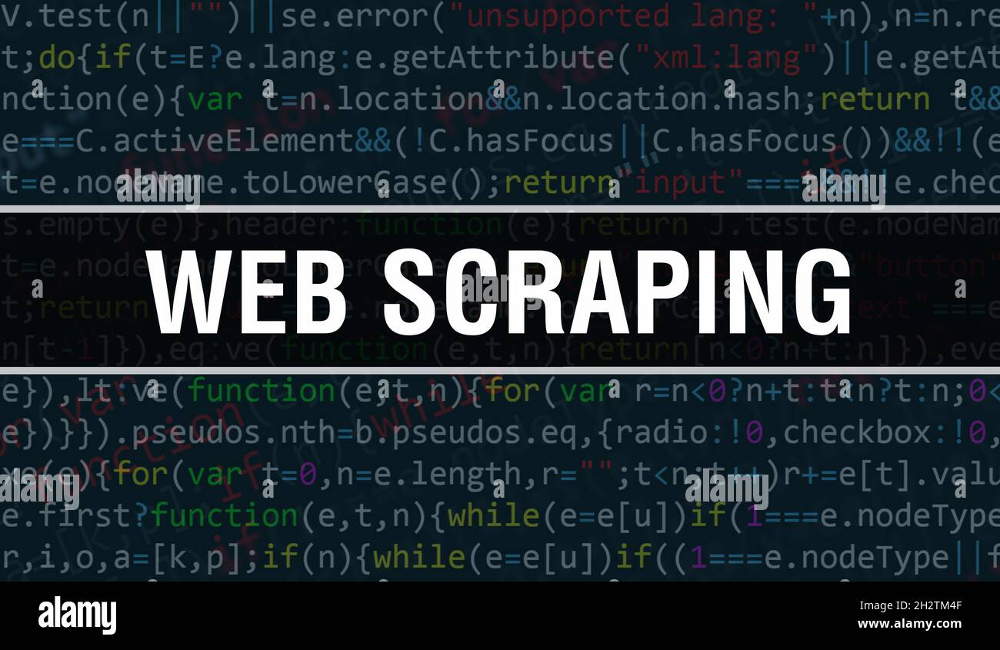
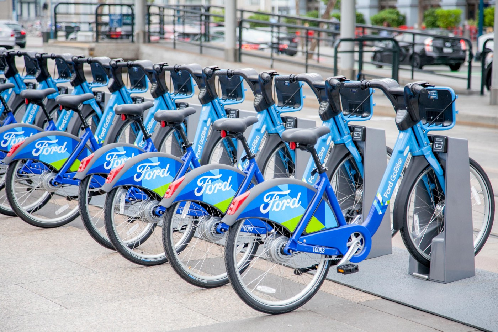

The aim of this project is to analyze the chat of a community group in which I participate in order to determine what
the members desire and to identify important decisions that can be made in the future to enhance community activities.
It keeps tabs on our chat and evaluates how much time we spend talking and how it affects the group's program.
Here I used different python libraries which help me to extract useful information from raw data.

Real-world data rarely comes clean. In this project I used Python and its libraries,
I gathered data from a variety of sources and in a variety of formats, assess its quality
and tidiness, then clean it. This is called data wrangling. I documented my wrangling efforts in PDF,
plus showcase them through analyses and visualizations using Python and its libraries.
This project was given in Udacity Data Analyst Nanodegree in order to exhibit what has been taught,
I wrangle the data from the WeRateDog Twitter account
using Python
.

In this project, I explained how to query an API with JSON output, transform this data to read it into a pandas dataframe,
make it available for insight and save it to a CSV file.

This project involved scraping a popular shopify website to get the new and old price of some gadget and comapring the ratings.

Ford GoBike System Dataset includes information about individual rides made in a bike-sharing system covering the greater San Francisco Bay area.
In this project, I demonstrated the importance and value of data visualization techniques in the data analysis process.I showed various ways to derive insights using Exploratory and Explanatory Data Visualization .